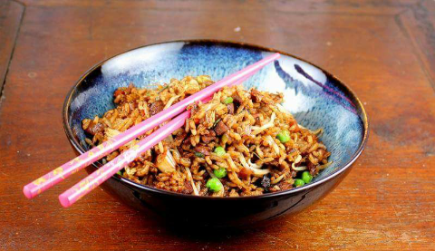

Chinese Fried Rice (Yangzhou)

INGREDIENTS
- 1/2 cup chopped carrot (very small)
- 1/2 cup frozen peas, thawed
- 3/4 cup finely chopped onion
- 1 egg, lightly beaten (or more eggs if you like)
- 2 cups bean sprouts
- 2 tablespoons light soy sauce (add more if you like)
- 3 drops soy sauce
- 3 drops sesame oil
- 4 cups cold cooked rice, grains separated (preferably medium grain)
- 4 green onions, chopped
- 8 ounces cooked lean boneless pork or 8 ounces chicken, chopped
- about 10 tablespoons oil
COOKING METHOD
- Heat 1 tablespoon oil in wok; add chopped onions and stir-fry until onions turn a nice brown
color, about 8-10 minutes; remove from wok.
- Allow wok to cool slightly.
- Mix egg with 3 drops of soy sauce and 3 drops of sesame oil; set aside.
- Add 1/2 tablespoon oil to wok,swirling to coat surfaces; add egg mixture; working quickly, swirl egg until
egg puffs, flip egg and cook other side briefly; remove from wok, and chop into small pieces.
- Heat 1 tablespoon oil in wok; add selected meat to wok along with carrots onion; stir-fry for 2
minutes.
- Add rice, green onions, and bean sprouts, tossing to mix well; stir-fry for 3 minutes.
- Add 2 tablespoons of light soy sauce and chopped egg to rice mixture and fold in; stir-fry for 1 minutes
more; serve.
- Set out additional soy sauce on the table, if desired.